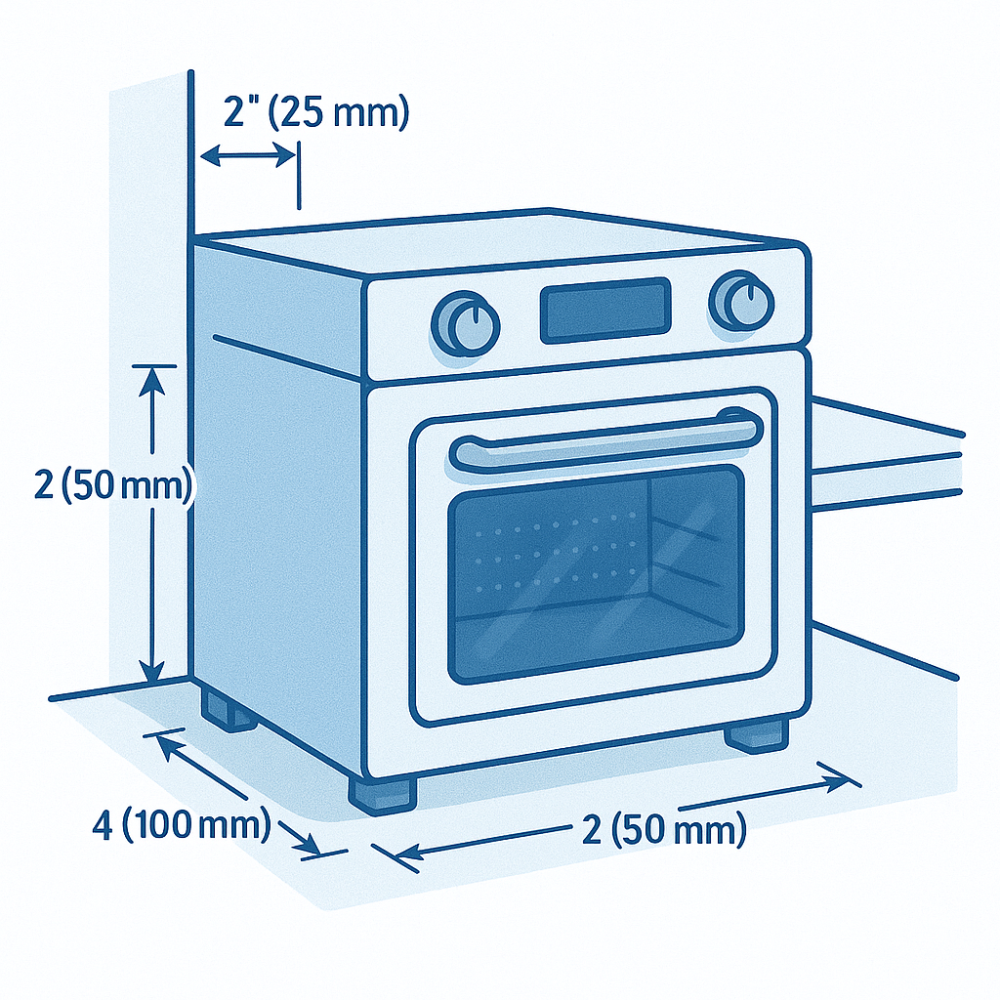
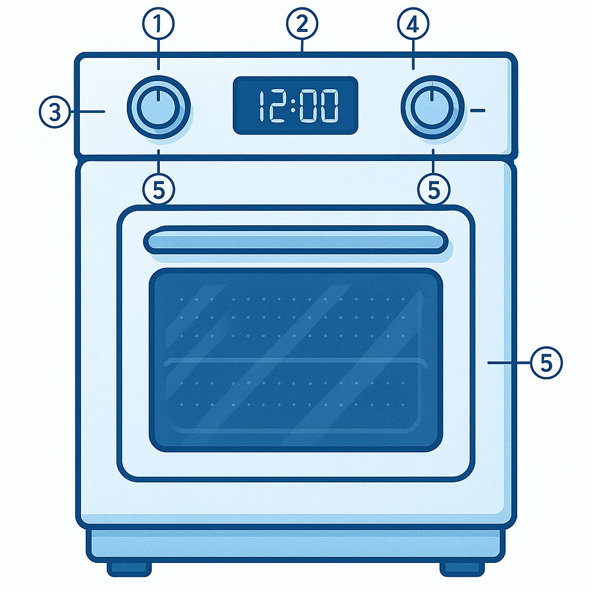
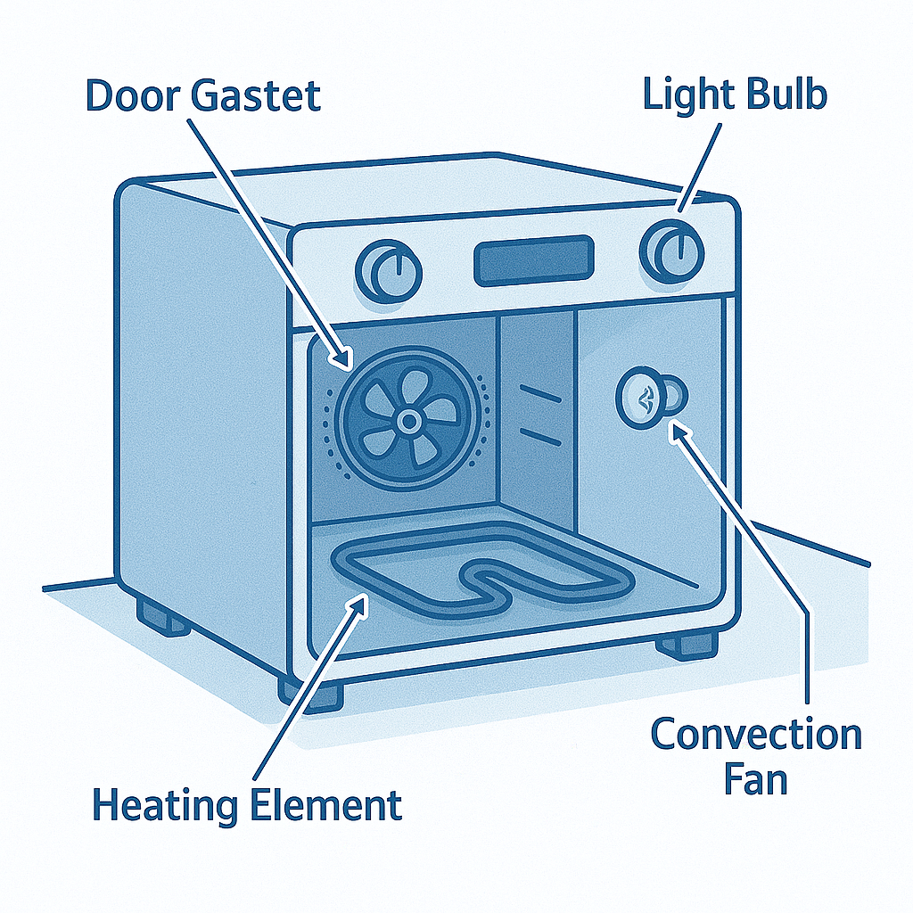
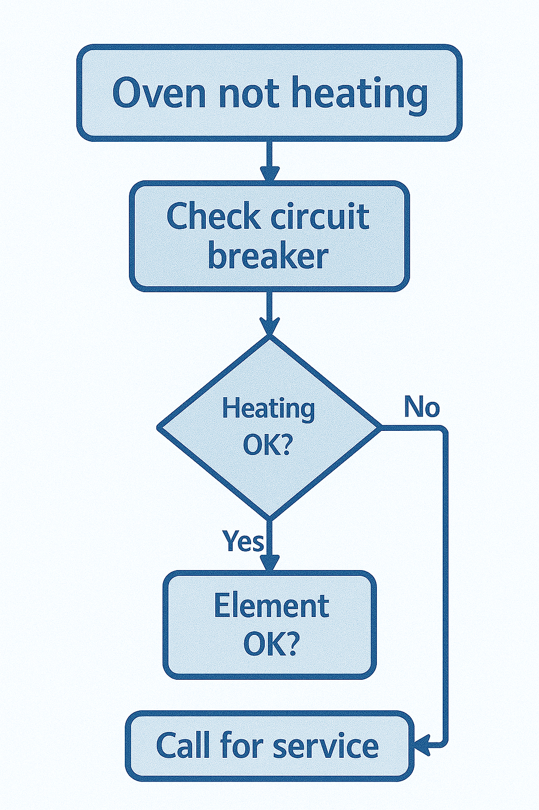

This manual covers installation, operation, safety, cleaning, and troubleshooting for the fictional IronClad K-Oven 12 Pro. Prepared as a portfolio sample.
1. Introduction
Manufacturer: IronClad Home Appliances, 101 Hearth Street, Springfield, USA Support: support@ironclad-home.example · +1-555-0199
Intended audience: qualified installers, service technicians, and safety-conscious end users. Scope: safe installation, operation, periodic cleaning, troubleshooting, and recordkeeping.
2. Safety Information
|
Improper installation, maintenance, or use may result in fire, electric shock, or serious injury. Read and follow all instructions before operating this appliance. |
2.1. General Safety
-
Disconnect from power supply before servicing.
-
Keep combustible materials at least 0.5 m from oven surfaces.
-
Do not operate with damaged power cord, plug, or control panel.
2.2. PPE (Personal Protective Equipment)
-
Heat-resistant oven mitts
-
Eye protection when servicing interior components
-
Protective clothing to avoid burns
3. Installation
|
Installation must be performed by qualified technicians. Improper installation voids warranty and may create fire or electrical hazards. |
3.1. Pre-Installation Checklist
-
Verify electrical supply: 230V AC, 50Hz, 15A dedicated circuit with GFCI protection
-
Check installation space: Measure clearances and ensure adequate ventilation
-
Gather required tools: Level, drill, screwdrivers, electrical tester, measuring tape
-
Review local codes: Ensure compliance with electrical and building regulations
3.2. Step-by-Step Installation Procedure
3.2.1. 1. Prepare Installation Location
-
Clear the area: Remove packaging and inspect oven for shipping damage
-
Measure space: Verify minimum clearances shown in diagram below
-
Check flooring: Ensure floor can support 45 kg distributed load

| Location | Minimum Clearance | Reason |
|---|---|---|
Rear wall |
100 mm |
Heat dissipation and service access |
Side walls |
50 mm each |
Air circulation and door opening |
Top surface |
200 mm |
Ventilation and steam venting |
Front |
600 mm |
Door opening and safe operation |
3.2.2. 2. Electrical Connection
Turn OFF circuit breaker before making electrical connections. Verify power is OFF with a qualified electrical tester.
-
Install dedicated circuit: 230V, 15A circuit with GFCI protection required
-
Use proper wiring: 12 AWG copper wire minimum for 15A circuit
-
Connect ground wire: Green/yellow wire to ground terminal (mandatory)
-
Install outlet: NEMA 6-15R grounded outlet within 1.5m of oven location
Electrical Verification Steps: . Test outlet voltage with multimeter: 230V ±10% expected . Verify ground continuity: <1Ω resistance to ground . Test GFCI operation: Press test button, should trip immediately . Reset GFCI and verify proper operation
3.2.3. 3. Positioning and Leveling
-
Position oven: Place in final location, maintaining required clearances
-
Check stability: Oven should not rock when door is opened
-
Adjust leveling feet: Use adjustable wrench to level oven in both directions
-
Verify level: Use spirit level on top surface - bubble within center marks
Leveling Specifications: * Maximum deviation: ±2mm over oven width/depth * Door should close smoothly without forcing * No gaps >3mm between door and frame when closed
3.2.4. 4. Initial Power-On and Testing
-
Connect power: Plug into grounded outlet firmly
-
Initial startup: Press power button - display should illuminate
-
Test all modes: Cycle through Bake, Broil, Convection, Self-Clean
-
Verify door lock: Test door lock mechanism during brief Self-Clean start
-
Check interior lighting: Light should activate when door opens
3.3. Post-Installation Verification Checklist
| Test Item | Pass/Fail |
|---|---|
Power indicator illuminates when plugged in |
☐ |
All mode buttons respond and display correctly |
☐ |
Temperature dial adjusts display reading |
☐ |
Timer counts down properly |
☐ |
Interior light activates with door opening |
☐ |
Door seals properly with no visible gaps |
☐ |
Oven remains level when door is fully opened |
☐ |
No unusual vibration during convection fan operation |
☐ |
Self-Clean mode activates and locks door |
☐ |
All clearances maintained per specification |
☐ |
3.4. Initial Break-In Procedure
Before first use, perform break-in procedure to remove manufacturing residues:
-
Set to Bake mode at 200°C for 30 minutes with empty oven
-
Ventilate kitchen - slight odor from protective coatings is normal
-
Clean interior with damp cloth after cooling to remove any residue
-
Record installation date in warranty documentation
4. Operation
4.1. Control Panel Overview

-
Power button
-
Mode selector (Bake, Broil, Convection, Self-Clean)
-
Temperature dial
-
Digital timer/display
-
Child lock indicator
4.2. Cooking Modes & Procedures
4.2.1. Bake Mode (Conventional Baking)
Temperature Range: 150–250°C Best For: Bread, cakes, casseroles, roasts
Procedure: . Preheat oven to desired temperature (typically 10-15 minutes) . Place food on center rack for even heating . Use light-colored, non-reflective pans for best results . Do not open door frequently - each opening reduces temperature 10-15°C
Recommended Settings:
| Food Type | Temperature | Time | Internal Temp (if applicable) |
|---|---|---|---|
Bread/Quick breads |
175-200°C |
25-45 min |
N/A |
Cakes (layer) |
180°C |
25-35 min |
N/A |
Cookies |
175-190°C |
8-12 min |
N/A |
Roast chicken (1.5kg) |
190°C |
1.5 hours |
75°C |
Roast beef (medium) |
180°C |
20 min/kg |
60°C |
Casseroles |
180°C |
30-45 min |
75°C (center) |
4.2.2. Broil Mode (High Heat from Top)
Temperature: Fixed at 250°C Best For: Browning, crisping, thin cuts of meat
Procedure: . Position rack 5-15cm from top element (closer = faster browning) . Preheat broiler for 5 minutes . Use broiler pan with slotted top to allow fat drainage . Watch food constantly - broiling happens quickly . Turn foods once halfway through cooking time
Broiling Guide:
| Food | Rack Position | Time per Side | Notes |
|---|---|---|---|
Fish fillets (2cm) |
10cm from element |
4-6 minutes |
Do not turn thin fillets |
Chicken breast |
15cm from element |
7-10 minutes |
Turn once, verify 75°C internal |
Steaks (2.5cm) |
10cm from element |
5-8 minutes |
For medium-rare |
Vegetables |
15cm from element |
5-8 minutes |
Brush with oil first |
4.2.3. Convection Mode (Fan-Assisted)
Temperature Range: 140–230°C (reduce conventional temp by 15-20°C) Best For: Multiple racks, even browning, faster cooking
Advantages: * 25% faster cooking times * More even browning and heating * Ability to use multiple racks simultaneously * Better for cookies, pastries, and roasting
Procedure: . Reduce conventional recipe temperature by 15-20°C . Reduce cooking time by 25% initially, then adjust . Use low-sided pans for better air circulation . Leave space between pans on multiple racks
4.2.4. Self-Clean Mode
Temperature: 485°C Duration: 3 hours Frequency: Every 3-4 months with normal use
|
Do not attempt to open door during Self-Clean cycle. Surface temperatures exceed 400°C. Ensure adequate kitchen ventilation during operation. |
Self-Clean Procedure: . Remove all racks, pans, and aluminum foil from oven . Wipe up large spills with damp cloth (small residue burns off normally) . Close door and select Self-Clean mode . Door will automatically lock when cycle begins . Wait for complete cycle and 1-hour cooldown before opening . Wipe ash residue with damp cloth after cooling
4.3. Food Safety Guidelines
Internal Temperature Requirements (Food Safety): * Poultry (whole): 75°C * Ground meat: 70°C * Beef/lamb (medium): 60°C * Pork: 63°C * Fish: 63°C * Casseroles/leftovers: 75°C
Use a reliable food thermometer - insert into thickest part without touching bone.
5. Cleaning & Maintenance
5.1. Daily
-
Wipe spills with damp cloth after cooling.
-
Avoid abrasive cleaners.
5.2. Monthly
-
Inspect and clean door gasket.
-
Replace oven light bulb (E14, 25 W).
5.3. Annual
-
Professional inspection recommended for heating elements and control circuits.

-
Heating element — replace if cracked or not heating
-
Convection fan — clean blades, check bearings
-
Door gasket — replace if torn or hardened
-
Light bulb — replace with rated type only
6. Troubleshooting
| Symptom | Possible Cause | Corrective Action | Error Code |
|---|---|---|---|
Oven not heating at all |
No power to unit; tripped GFCI/breaker |
Check power cord connection; reset GFCI; verify circuit breaker; test outlet with multimeter (230V expected) |
— |
Heating element not glowing |
Failed heating element; loose connection |
Check element for cracks/breaks; verify 230V at element terminals; replace element if faulty (Part #KO-ELEM-001) |
E2 |
Uneven baking/hot spots |
Blocked convection fan; damaged door seal; overloaded rack |
Clean fan blades; inspect door gasket for tears; reduce load; rotate pans halfway through; use center rack position |
— |
Convection fan not running |
Motor failure; blocked fan; loose wiring |
Listen for fan noise in convection mode; check for obstructions; verify 24V at fan motor; replace fan assembly if needed |
E3 |
Door won’t open after Self-Clean |
Cooling cycle incomplete; door lock malfunction |
Wait additional 30 minutes for cooldown; check door lock mechanism; verify interior temperature <250°C before attempting override |
E4 |
Oven overheating/too hot |
Temperature sensor failure; control board fault |
Test sensor resistance: 1100Ω at 25°C expected; check sensor wiring for damage; replace sensor (Part #KO-TEMP-001) |
E1 |
Display shows incorrect temperature |
Temperature sensor drift; calibration needed |
Compare oven thermometer to display reading; adjust calibration in service mode; replace sensor if >25°C error |
— |
Interior light not working |
Burned bulb; loose connection; switch fault |
Replace bulb (E14 base, 25W, high-temp rated); check door switch operation; verify 230V at light socket |
— |
Excessive smoke during cooking |
Spilled food burning; incorrect temperature; poor ventilation |
Clean spills immediately; verify temperature setting vs recipe; ensure adequate room ventilation; check for grease buildup |
— |
Door won’t close properly |
Misaligned hinges; warped door; damaged gasket |
Check hinge alignment; adjust door position; inspect gasket for damage; ensure no obstructions in door frame |
E5 |
Timer not counting down |
Control board fault; display issue |
Test other functions; perform power cycle (unplug 60 seconds); check for software updates; replace control board if persistent |
E6 |
Unusual noises during operation |
Loose fan blades; worn bearings; rattling components |
Identify noise source (fan, heating elements, door); tighten loose screws; replace fan motor if bearing noise present |
— |
Self-Clean cycle won’t start |
Door not fully closed; oven too dirty; safety lockout |
Ensure door closes completely; remove excessive debris; wait 24 hours if multiple failed attempts; check door lock operation |
E7 |
Error code E8 displayed |
Communication fault between control board and display |
Power cycle unit; check ribbon cable connections behind control panel; replace control board/display assembly |
E8 |
Oven turns off during cooking |
Overheating protection; voltage fluctuation; control fault |
Check for blocked vents; verify stable 230V supply; allow cooling period; inspect control board for burnt components |
E9 |

6.1. Error Code Reference
| Code | Meaning | Action Required |
|---|---|---|
E1 |
Temperature sensor fault |
Replace temperature sensor (Part #KO-TEMP-001) |
E2 |
Heating element failure |
Test element resistance; replace if open circuit |
E3 |
Convection fan motor fault |
Check motor wiring; replace fan assembly |
E4 |
Door lock malfunction |
Check door lock mechanism; replace actuator |
E5 |
Door alignment error |
Adjust door hinges; replace gasket if damaged |
E6 |
Timer/control fault |
Power cycle; replace control board if persistent |
E7 |
Self-Clean safety lockout |
Clear excessive debris; ensure proper door closure |
E8 |
Display communication error |
Check control connections; replace display unit |
E9 |
Overheating protection |
Check ventilation; allow cooldown; service if recurring |
6.2. When to Contact Service
Call IronClad service (+1-555-0199) when: * Multiple error codes appear simultaneously * Electrical components show signs of burning or melting * Oven trips household circuit breaker repeatedly * Temperature accuracy cannot be restored through sensor replacement * Self-Clean cycle repeatedly fails to complete * Any gas odor (if near gas appliances) - evacuate and call gas company immediately
6.3. Parts & Service Information
Common Replacement Parts: * Temperature sensor (KO-TEMP-001): $35 * Heating element (KO-ELEM-001): $65 * Convection fan assembly (KO-FAN-001): $85 * Door gasket (KO-SEAL-001): $25 * Interior light bulb (KO-BULB-001): $8
Service Schedule: * Annual inspection recommended for heavy-use environments * Door seal replacement every 3-4 years * Heating element typically lasts 8-10 years with normal use
7. Warranty & Support
-
2-year limited warranty (parts & labor)
-
Excludes damage from misuse or unauthorized repairs
-
Support available Mon–Fri, 09:00–17:00 (local time)
Contact: IronClad Home Appliances, 101 Hearth Street, Springfield, USA
8. References & Standards
-
IEC 60335-1 — Household and similar electrical appliances — Safety
-
UL 1026 — Electric Household Cooking and Food Serving Appliances
-
ISO 13732-1 — Ergonomics of thermal environment — Contact temperature limits
Appendix A: Controlled Document Info
Doc ID: KOVEN-12PRO-UM-01
Revision: 1.0 (Portfolio Sample)
Manufacturer: IronClad Home Appliances
Note: For portfolio demonstration use only — all names and contacts are fictional.